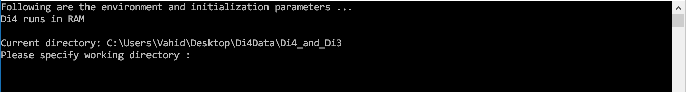
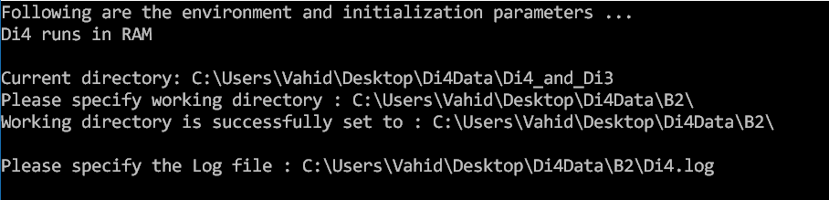

System requirements
Operating system: Microsoft® Windows 10, 8.1, 8, or 7
Libraries and packages: .NET framework 4.7.1 (or newer)
Download, install, configure, and run Di4
Operating system: Microsoft® Windows 10, 8.1, 8, or 7
Libraries and packages: .NET framework 4.7.1 (or newer)
Di4 can be downloaded from the releases page on Github.
Di4 is portable (i.e., it does not require installation); hence to execute it, extract the content from the downloaded
archive, and either double-click on the Di4BCLI.exe file or call it from PowerShell using a command
similar to the following:
.\Di4BCLI.exe
Di4 requires a number of configuration parameters to be set. First, we explain how to set the parameters, then we explain each of the parameters and their role.
When run for the first time, Di4 prompts for required configuration parameters and saves them for future use. For instance, at its first execution Di4 asks for working directory as shown in the following figure:
Di4BCLI.exe.Config
This file is located under the downloaded and unziped Di4 archive and can be opened using any text editor (e.g., Notepad++). In its basic setup, the file’s content is as the following:
<?xml version="1.0" encoding="utf-8"?>
<configuration>
<appSettings>
<add key="Memory" value="RAM" />
<add key="Parser__ChrColumn" value="0" />
<add key="Parser__LeftEndColumn" value="1" />
<add key="Parser__RightEndColumn" value="2" />
<add key="Parser__NameColumn" value="3" />
<add key="Parser__ValueColumn" value="4" />
</appSettings>
<runtime>
<gcAllowVeryLargeObjects enabled="true"/>
</runtime>
<startup>
<supportedRuntime version="v4.0" sku=".NETFramework,Version=v4.7.1"/>
</startup>
</configuration>
Some basic parameters can be set via CLI, but some others can be set only via the configuration file. Although for a basic execution it is not required to familiarize yourself with all these parameters and how to set them, but a degree of knowledge could help gain a better control on the Di4 framework and its functionality.
Some basic configuration parameters are discussed in the following. Note that all the following
settings should be nested under appSettings, as shown in the above example.
One can choose whether to index files in RAM (execute in-memory) or persist on hard disk. When persisted on hard disk, the indexed data can be re-used (and updated) in future execution. This configuration can be set via configuration file only. To set Di4 to execute in memory set the following in the configuration file:
<add key="Memory" value="RAM" />
And to set Di4 execute from hard disk, set the following:
<add key="Memory" value="HDD" />
Working directory is a folder where Di4 reads data to be indexed, and persists (if HDD
is chosen, as aforementioned) index data structures. For instance, the following figure shows how to
set working directory in CLI:
Or use the following key in configuration file.
<add key="WorkingDirectory" value="C:\Users\Vahid\Desktop\Di4Data\B2\" />
In addition to CLI interactions, Di4 logs in a text file every command it receives and every message it throws as a result of executing the command. One may set the log file as the following via CLI:
Or using the following key in configuration file:
<add key="LogFile" value="C:\Users\Vahid\Desktop\Di4Data\B2\Di4.log" />
Di4 and Di3 can be enabled and/or disabled using two configuration keys, which can be set both via CLI and the configuration file. The following figure shows how they are set via CLI.
Inverted index refers to Di3, and incremental inverted index refers to Di4.
To enable/disable Di4/Di3 via configuration file, the EnableInvertedIndex and
EnableIncrementalIndex keys should be set, which refer to Di3 and Di4 respectively.
Therefore, to run Di4 set the keys as the following:
<add key="EnableInvertedIndex" value="n" /> <add key="EnableIncrementalIndex" value="y" />
Or to run Di3, set the keys as the following:
<add key="EnableInvertedIndex" value="y" /> <add key="EnableIncrementalIndex" value="n" />
When executed in persisted mode (i.e., index data are stored in hard disk), Di4 can cache a number of recently visited snapshots in memory. The minimum and maximum number of snapshots to be cached can be specified using the following configuration keys.
<add key="MinBInCache" value="10" /> <add key="MaxBInCache" value="100" />
Determining an optimal cache size is a common challenge, and applies here as well. The cache size is a trade-off between performance and memory consumption. If set too low, Di4 mainly relies on de-serializing snapshots from hard disk; and if set too high, depending on the computer performance, it may also penalize performance. Additionally, whether the cached snapshots will be used executing a query or not, depends on the query. For instance, when Di4 executes a query that is targeting different parts of the genome at each step, the snapshots required to answer the query may not be cached previously; therefore, Di4’s query on the cached data mainly hits no snapshot. This may degrade performance as Di4 needs to first check the cached snapshots (which in this scenario, may mainly hit no snapshot) before de-serializing required snapshots from hard disk. Accordingly, cache size is a factor of computer performance, memory size, input data, and commonly executed queries. Therefore, we leave it to the user to decide what could be “optimal” parameters for their setting.
A simplest approach to run Di4 is by double clicking on the Di4BCLI.exe file
in the Di4 folder. After setting/showing the configurations, it shows the following screen
which is Di4’s command prompt.
Run the command getdp in the Di4 command prompt (write the command and
hit
This command returns the degree of parallelism at which Di4 is running, it is
automatically determined based on the number of cores and thread of the host computer’s
processor. Di4 extensively benefits from parallelization and goes under extensive (partial)
locking mechanisms; therefore, its performance could be affected by the degree of
parallelism. One may change the degree of parallelism by running setdp
command as the following:
Chr-level degree of parallelism specifies how many independent instances of Di4 are run in parallel. Di4-level degree of parallelism indicates how many parallel threads read/write each Di4 instance. Accordingly, with Chr and Di4 level of parallelism set to 4 and 4 respectively, 16 (=4*4) threads are executing a query. Accordingly, the host machine’s CPU and hard disk I/O (if index data are persisted on hard disk) should have enough throughput to execute all these threads optimally. Therefore, we recommend considering a host machine’s specs for setting the degree of parallelism. Also, note that Di4 running in auto-determined degree of parallelism could perform at a reasonable throughput in most scenarios.